IAW: Práctica 5
MkDocs, Material y GitHub Pages
Alumno: Ryan Alcañiz
Profesor: Juanjo Felis
Asignatura: IAW
Curso: 2.º ASIX
1. Crear un entorno virtual
Figura 1. Creo el entorno virtual.
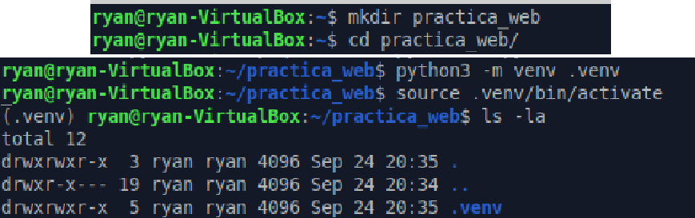
2. Instalar MkDocs Material
Instalo MkDocs Material y compruebo que se ha instalado correctamente.
Figura 2. Instalo MkDocs Material y compruebo que se ha instalado correctamente.
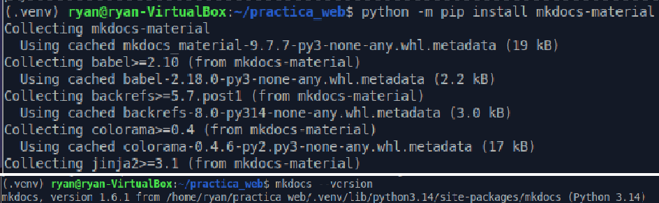
3. Crear el proyecto con MkDocs
Figura 3. Creo el proyecto con MkDocs.
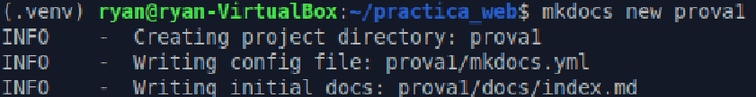
Entro en el directorio docs para editar el archivo index.md.
Figura 4. Entro en el directorio docs para editar el archivo index.md.
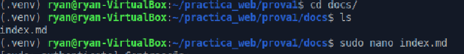
4. Editar el contenido y la configuración
Edito con Nano el archivo index.md.
Figura 5. Edito con Nano el archivo index.md.
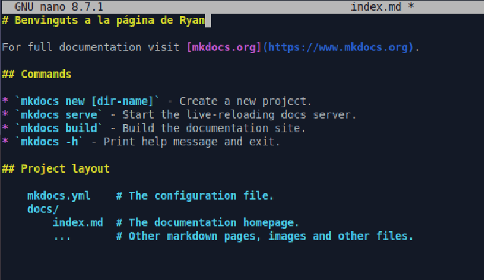
Añado contenido al archivo mkdocs.yml.
Figura 6. Añado contenido al archivo mkdocs.yml.
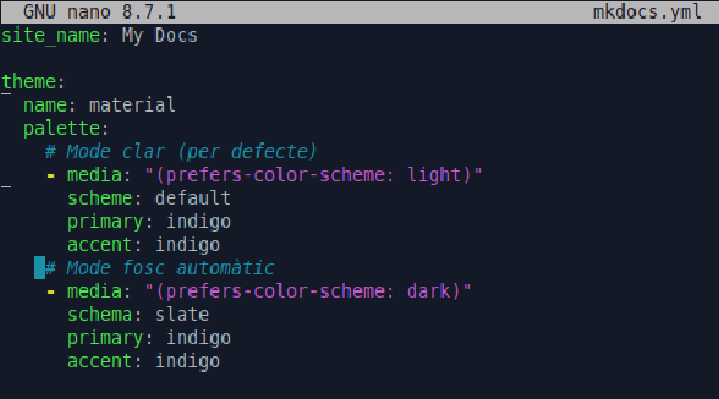
5. Ejecutar y comprobar el sitio
Ejecuto el servidor de MkDocs.
Figura 7. Ejecuto el servidor MkDocs.
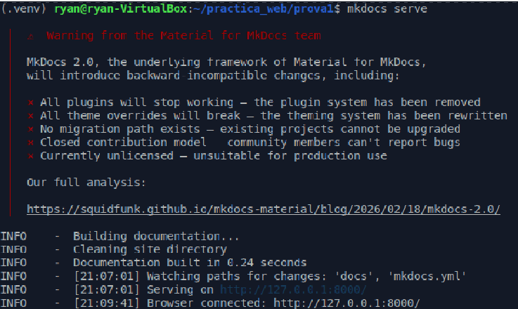
Compruebo que la página se muestra correctamente.
Figura 8. Compruebo que mi página se muestra correctamente.
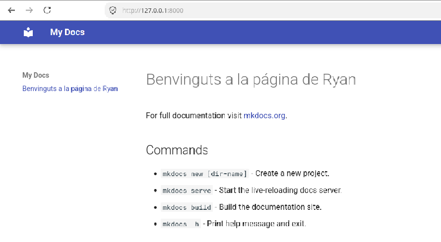
6. Generar el sitio web
Figura 9. Genero el sitio web.
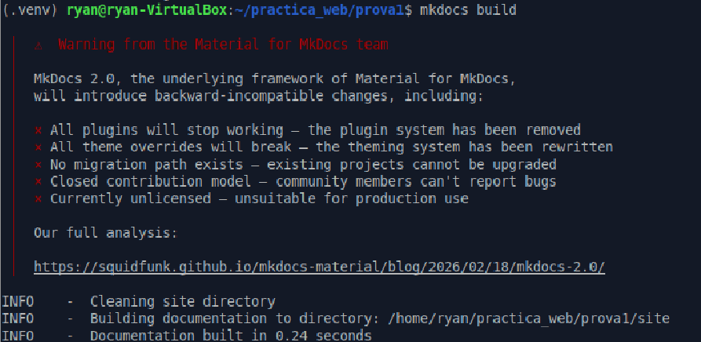
7. Crear el archivo .gitignore
Creo el archivo .gitignore y añado las rutas indicadas en la captura.
Figura 10. Creo el archivo .gitignore y añado su contenido.
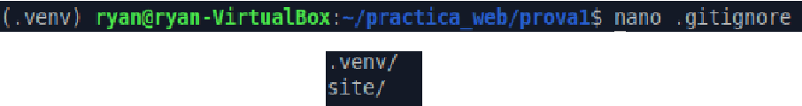
8. Preparar y subir el proyecto a GitHub
Figura 11. Preparo Git para subir el proyecto.
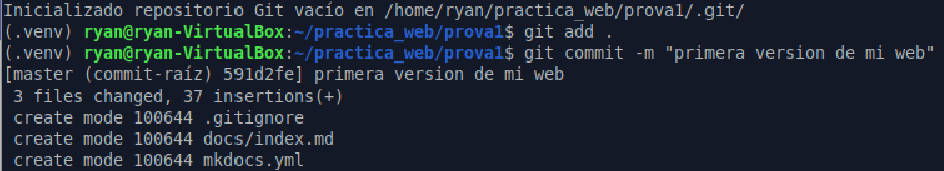
Figura 12. Subo el proyecto a mi repositorio de GitHub.
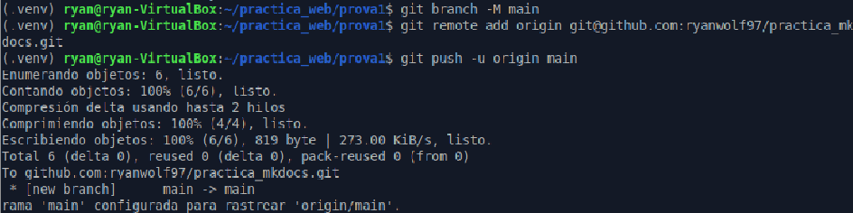